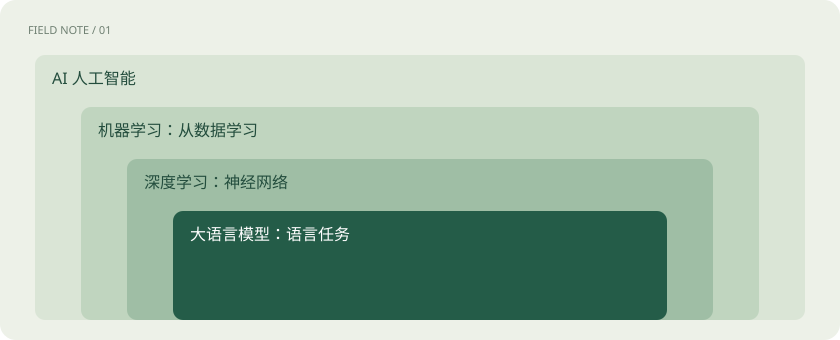

先用一个类比理解
把 AI 想成“让机器完成智能任务”的大园区。机器学习是园区里通过数据找规律的路线，深度学习是这条路线上的一类方法。大语言模型不是整个园区。
类比只帮助建立直觉，不等同于技术的完整机制。
一图看懂

从任务看 AI
识别照片里的猫、预测设备是否故障、生成一段解释，都可以是 AI 的任务。AI 系统也可能包含手写规则，不能把所有 AI 都等同于聊天机器人。
模型与产品分开理解
模型是学习到的计算规则与参数；聊天产品还包括界面、搜索、文件处理、账号和安全策略。同一个模型接入不同产品，体验可能不同。模型能力也不等于整套系统的能力。
你需要记住的主线
先看输入是什么、系统要产出什么，再问中间用了哪些模型和工具。遇到新名词时，把它放回“模型—应用—平台—硬件”四层，而不必立即记住所有算法。
放进真实场景
SCENARIO
一个客服助手：大模型组织语言，检索系统找订单，业务接口查询状态，页面展示结果。答得好是多个环节共同作用。
别踩这个误区
“用了 AI”不代表它在每次使用时都持续训练；“模型更大”也不保证每一种任务都更好。
想一想
聊天网页和大语言模型是同一个东西吗？
不是。网页是产品入口，大模型只是其背后的组成部分之一。
关联阅读
资料与边界
本文为原创知识讲解。类比和图示经过简化；示例数字不代表实测或报价。整理日期：2026-11-04。文末列出对应技术的原始资料，具体功能与版本支持请以原文为准。